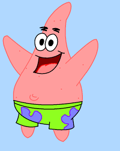

SpongeBob SquarePants (commonly shortened to SpongeBob) is an American animated comedy television series created by marine science educator and animator Stephen Hillenburg for Nickelodeon. It chronicles the adventures of the title character and his aquatic friends in the fictional underwater city of Bikini Bottom. Nickelodeon aired a preview for the series in the United States on May 1, 1999, after the airing of the 1999 Kids' Choice Awards. The series officially premiered on July 17, 1999.

His entertaining episodes narrate several adventures of cartoon characters in the deep sea, the main character is SpongeBob and his friends in a fictional underwater city,The character of SpongeBob is characterized by activity, optimism, and childlike enthusiasm for life, and the pleasant humorous atmosphere in his house, which resembles the shape of a pineapple, appears, and his best friend is (Basit)